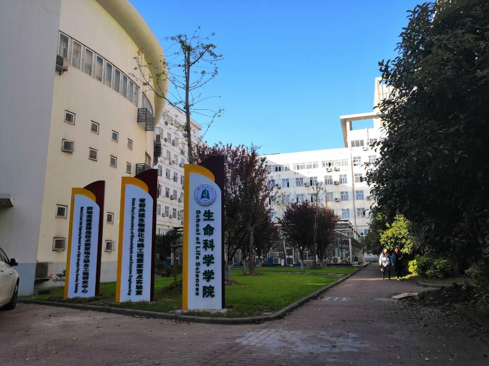

湖北大学简介

黄鹤江城，百湖灵秀；沙湖黉门，弦歌铿锵。 湖北大学地处国家中部地区中心城市、湖北省省会——武汉市。学校是湖北省人民政府与教育部共建的省属重点综合性大学，也是国家“中西部高 校基础能力建设工程”高校、湖北省“国内一流大学建设高校”，湖北省“最佳文明单位”。现任党委书记尚钢、校长谢红星。
我所在的院系———生命科学学院
湖北大学生命科学学院创始于1931 年，当时的湖北省立教育学院（湖北大学前身）设有两系一科，其中的农业教育系即为湖北大学生命科学学院 的前身。70余年来，湖北大学生命科学学院风雨兼程，励精图治，伴随着学校的发展而发展，紧跟着学校的进步而进步，到1997年4月由原生物科 学系和生态学研究所合并组建成现在的生命科学学院。学院大楼坐落在校本部东门，集实验教学、科研和办公为一体，建筑面积13000平方米，固 定资产超过7000万元，是学习和从事科学研究的理想场所。系所组成：设有生物科学系、生物技术系、生物工程系、药学系、生物信息学系、实验 教学中心和《蛛形学报》编辑部。同时，建有蛋白质组学研究所、生态学研究所、生物化学与分子生物学研究所、遗传学研究所和中药生物技术研究中心。

湖大图书馆
湖北大学图书馆是学校的文献信息资源保障中心，是全国古籍重点保护单位。图书馆始建于1931年，历经了湖北省立教育学院图书馆、武汉师范学院图 书馆到湖北大学图书馆的变迁。现图书馆分为总馆、人文分馆、阳逻分馆三部分，截止2016年底，图书馆收藏有中外文纸质文献235.63万册，中外文电 子图书总量为289.25万册；拥有中外文数据库286个，中外文电子全文期刊4.69万种；中外文纸质报刊近3000种，各种非印刷型资料近万件，构成了多 类型、多载体、特色鲜明的综合性馆藏体系。
点击访问:
图书馆主页

综合实训大楼
据了解，综合实训中心大楼总用地面积约9000平方米，总建筑面积45177平方米，项目总投资2亿元 ，建设工期为28个月。大楼建成后，将新增各类实验室73个，新增本科实验仪器设备8454台（套） ，可满足设计规模本科在校生17000人实验教学的需要。综合实训中心大楼的建成，将为强化实验实 践教学、培养学生创新实践能力提供强有力的保障。

想获取关于湖北大学的更多信息，点击访问：湖北大学官方网站
(#遥远的你#)